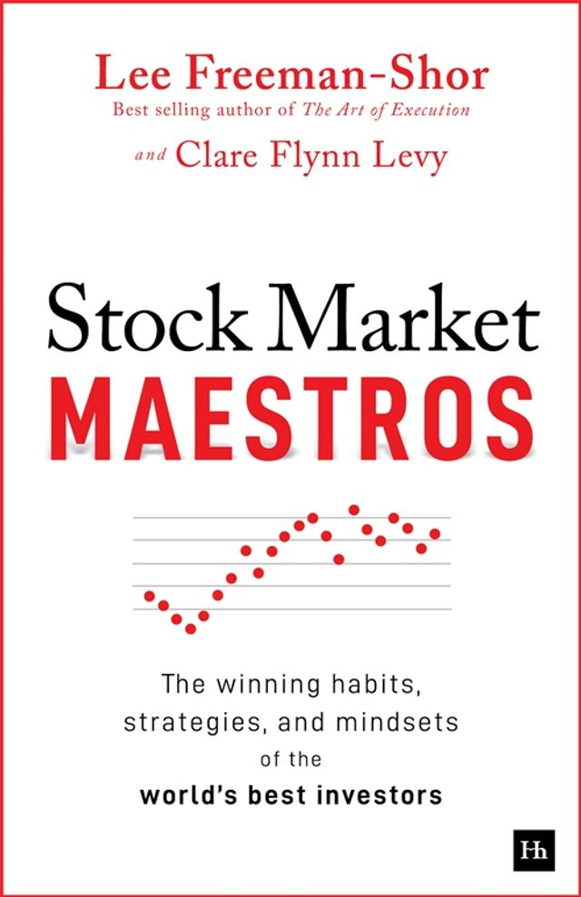

李·弗里曼-肖（Lee Freeman-Shor）在投资管理行业拥有逾十六年从业经验，曾任职于施罗德（Schroders）等机构，后成为独立作者与演讲者。他的第一部著作《执行的艺术》（The Art of Execution，2015年）聚焦于投资组合管理中的行为决策，出版后在业界广受好评。克莱尔·弗林·利维（Clare Flynn Levy）是行为分析金融科技公司Essentia Analytics的创始人及首席执行官，曾在基金管理行业工作多年，后以数据科学方法研究投资者的决策质量，开创了"决策归因分析"（Decision Attribution Analytics）这一新兴领域。两人共同撰写的《股市大师》（Stock Market Maestros）由哈里曼出版社（Harriman House）于2026年3月出版，副标题点明了其核心内容：研究全球顶尖基金经理的制胜习惯、策略与心智模式。
全书的研究基础是对十二位顶尖职业投资者的深度访谈，辅以Essentia Analytics所积累的大规模真实交易数据与行为分析。与市面上大多数投资类书籍依赖回忆性访谈不同，本书的独特之处在于将定性的深度对话与定量的决策数据相结合，从而在"投资者自述"与"投资者实际行为"之间建立比对，识别出表述与行动之间的落差。书中呈现了四十一个真实案例，涵盖了这些顶尖投资者如何应对持仓亏损、如何决定加仓或止损、如何在极端市场环境中维持判断的一致性，以及他们如何处理信息过载与情绪压力下的决策问题。弗里曼-肖与利维提炼出若干在数据中反复出现的共性特征：顶尖投资者往往有着明确的卖出纪律、对自身决策过程的高度反思习惯，以及不依赖于单一信息来源的多维验证机制。
《股市大师》在投资圈引发了广泛关注。MicroCapClub创始人伊恩·卡塞尔（Ian Cassel）在与作者的对话中称这本书"提供了对投资决策质量最诚实的审视之一——它不只展示成功，而是真正分析了卓越投资者在不确定性中如何维持边界"。利维在接受采访时强调，本书的研究发现之一是：即使是全球最优秀的投资者，其选股准确率也并不像外界以为的那样高——真正区分他们与普通投资者的，是其在判断正确时的仓位管理，以及在判断错误时快速承认并纠偏的能力。
对于专业投资者与希望提升决策质量的个人投资者，《股市大师》提供的不是具体的选股技巧或行业分析方法，而是一套观察与反思自身决策行为的框架。投资的长期超额回报，在很大程度上不取决于找到最好的想法，而取决于在最好的想法上执行得足够彻底、在错误的想法上纠偏得足够及时。这一洞见与查理·芒格反复强调的"避免愚蠢比追求聪明更重要"形成深度共鸣——真正的差距，往往不在于认知起点，而在于执行纪律与自我纠偏的机制。